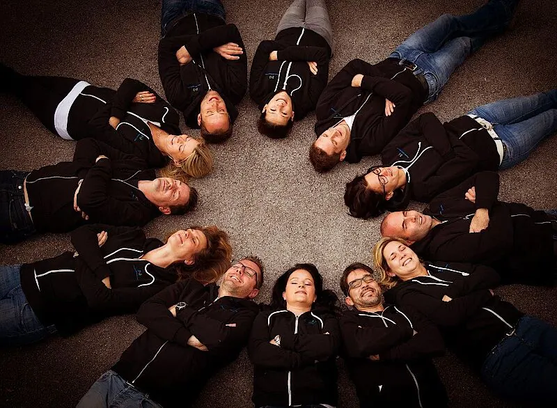
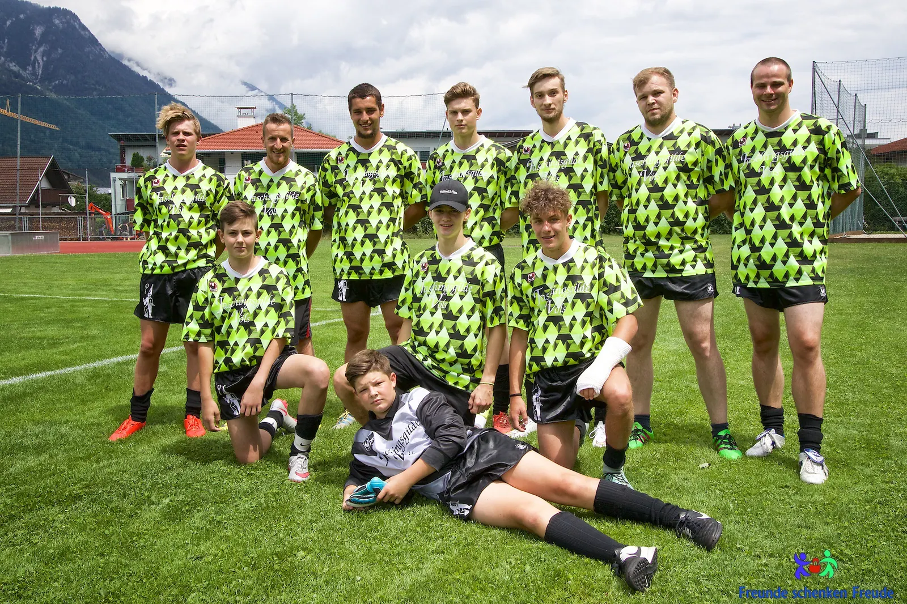
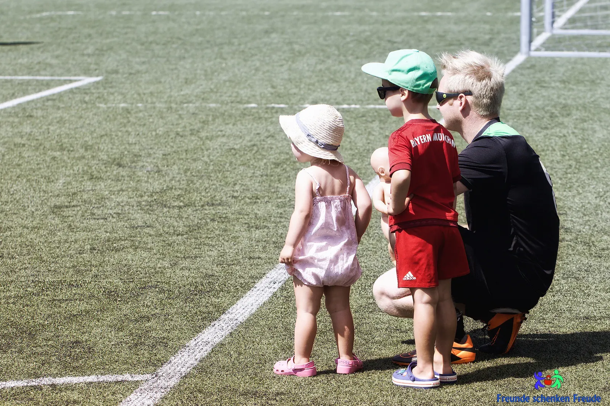
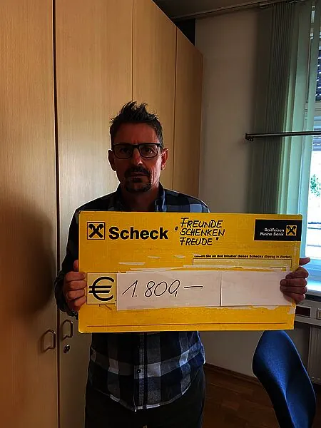
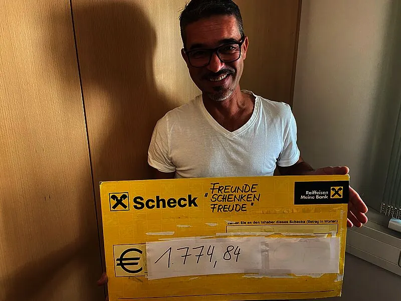
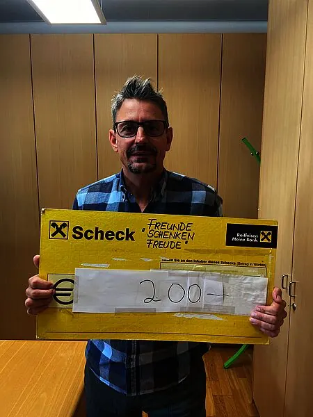
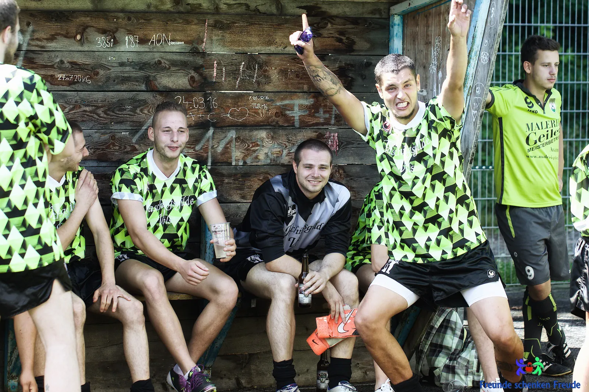
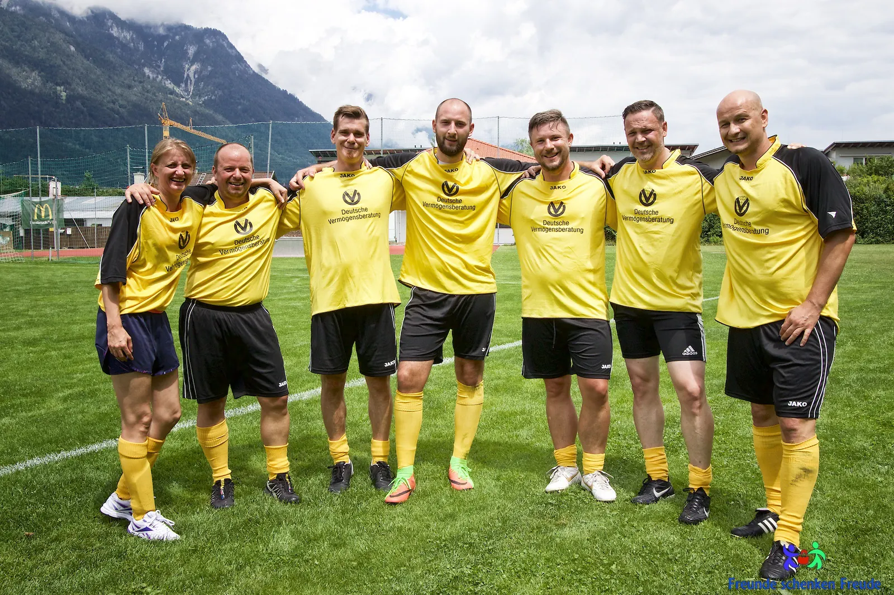
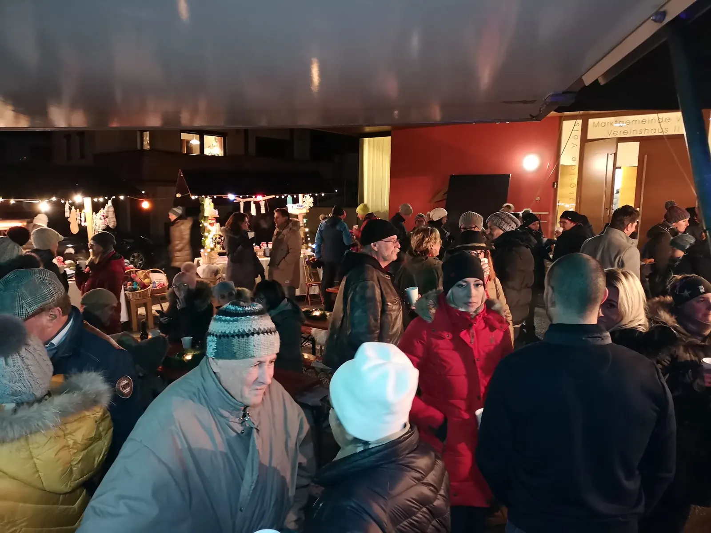

Freunde schenken Freude
Wir schenken Menschen in Not ein Stück Freude.
Mildtätiger Verein aus Völs · seit 2012

Freunde, die helfen.
Freunde schenken Freude ist ein mildtätiger Verein. Wir haben ihn aus dem Wunsch heraus gegründet, Menschen zu helfen, die – auf welche Weise auch immer – in Not geraten sind.
Wie der Name schon sagt, sind wir eine kleine Gruppe von Freunden. Wir organisieren eigene Veranstaltungen und beteiligen uns an verschiedenen Events. Der Großteil der Einnahmen geht jeweils an eine zuvor ausgewählte Person, eine Familie oder ein Projekt.
Mitglieder können aktiv bei Veranstaltungen mitwirken oder einfach mit einem jährlichen Mitgliedsbeitrag von 10 Euro helfen.
Wir stammen alle aus Völs und leben auch hier. Deshalb beschränken wir unsere Unterstützung auf Fälle in Völs und Umgebung. Wenn Sie von einer Notlage wissen, wenden Sie sich gerne an uns.
Freunde schenken Freude garantiert Hilfe, die wirklich dort ankommt, wo sie gebraucht wird.


Hier kommt Ihre Hilfe an.

1.800 Euro für einen jungen Völser nach einem Sportunfall
1.800 Euro für einen jungen Völser, der nach einem tragischen Sportunfall auf den Rollstuhl angewiesen ist.
Weiterlesen
Ein neues Gartenhäuschen für Jana
Mit 1.774,84 Euro haben wir der kleinen Jana ein neues Gartenhäuschen als Rückzugsort ermöglicht.
Weiterlesen
200 Euro für den Schulschluss an der Mittelschule Völs
Mit 200 Euro unterstützen wir einige Kinder der Mittelschule Völs bei den Aktivitäten zum Schuljahresabschluss.
Weiterlesen
Das Schicksal annehmen, ohne zu jammern, mit großer Stärke durchs Leben gehen und helfen, wo man kann.
Unser Freund Kurt Larcher ist unser Vorbild. Aus dem Gedenkturnier für ihn ist 2012 unser Verein entstanden.
Kurts Geschichte lesenGemeinsam feiern. Gemeinsam helfen.

Das Turnier
Jeden Sommer am ersten Ferientag spielen Mannschaften aus Völs und Umgebung beim Kurts Freunde- und Familienturnier – im Gedenken an Kurt.
Mehr erfahren
Advent in Völs
Am Völser Christkindlmarkt und beim Adventmarkt in der Fließentenne bieten wir Selbstgemachtes an. Der Erlös hilft Menschen in Not.
Mehr erfahrenHilfe, die wirklich ankommt.
Spenden
Ihre Spende geht direkt an Menschen in Völs und Umgebung, die es gerade schwer haben.
- Empfänger
- Freunde schenken Freude
- IBAN
- AT84 3600 0000 0070 5780
- BIC
- RZTIAT22
- Zweck
- Spende
Mitglied werden
Als Mitglied helfen Sie mit Ihrem Jahresbeitrag – und wenn Sie möchten, auch bei unseren Veranstaltungen.
Sie wissen von einer Notlage? Melden Sie sich gerne bei uns – vertraulich und unkompliziert.
Notlage melden